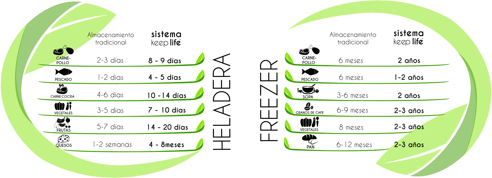

Rollos de bolsas Gofrados
Diseñadas especialmente para envasadoras hogareñas o externas que trabajan por succión. Cuentan con un cuadriculado o estriado frontal que canaliza la extracción del oxígeno. Rollos exclusivos de 15 MT continuos en anchos disponibles 15 – 20 – 25 - 30 CM y un espesor de 90 micrones. ¡Extienden la vida útil de tus alimentos!
Bolsas Lisas y Termocontraíbles
Soluciones integrales para envasadoras a campana con cámara de vacío. Orientadas a las exigencias de comercios, carnicerías, frigoríficos e industrias elaboradoras. Bolsas Lisas Multicapa STD, la más elegida para impresión – Alto brillo y transparencia. Termocontraíbles STD/AB de alta barrera para un ajuste anatómico perfecto y alta resistencia mecánica ante piezas con hueso o exportación. Bolsas Cook-In en distintos formatos de presentación para procesos industriales de cocción y envasado.
TABLA DE CONSERVACION
Comparativa de durabilidad en heladera y freezer: almacenamiento tradicional vs. sistema de envasado Keep Life.


Salón de Ventas a la Calle en El Palomar
A partir de 2020 inauguramos nuestro salón de ventas para la atención directa al público en Av. Ing. Guillermo Marconi 6521. Ofreciendo soluciones al cliente minorista como a industriales o gastronómicos.